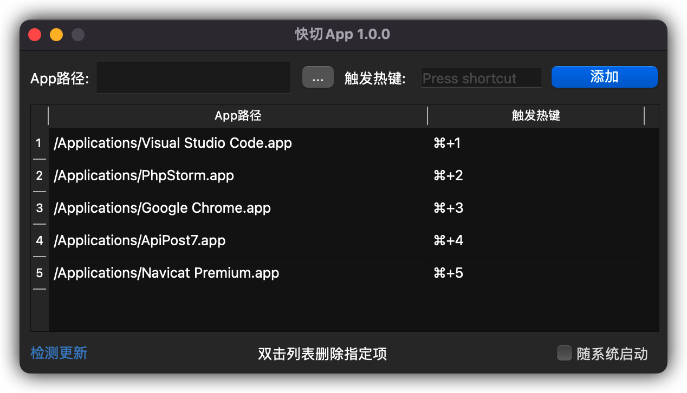

快速在各个APP中使用自定义快捷键进行切换
程序开发中使用macOS自带Tab键切换经常会碰到应用排序乱的问题，导致切换APP效率很低，也没找到很好的解决办法，突发奇想有了你现在所见到的这款APP，相信TA能成为你的好帮手！
所需开启的权限
*如已经存在将其删除再添加
系统偏好设置→安全性与隐私→隐私→输入监听→右侧✚号→将本APP添加即可
Preview

Releases Page
Now Download